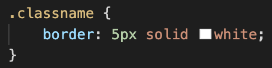
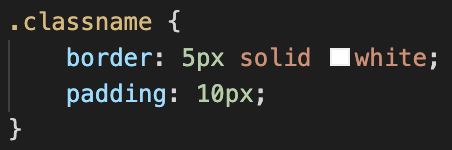
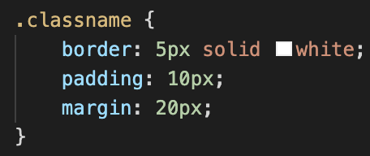

I know, they sound pretty similar. To explain the difference between these three properties, we need to add a fourth: content!
Look at the image below of the CSS box model and pretend it’s a framed photo you are planning to hang on a wall in your home.

- The content is the photo.
- The padding is the matting(or cardboard)that’s inside the frame. This highlights and compliments the photo.
- The border is the photo frame.
- The margin is the amount of wall space you want to leave between other photos you have hanging. You want it to look aesthetically pleasing right?
In CSS terminology:
- Content can be a body of text, an image or a video clip.
- Padding is used to create space around the content within the border.
- Borders surround the content area and padding.
- Margins are used to create space around the border.
Each box is an element.
Why does this matter?
The box model concept is important because web browsers render each element on a web page as a rectangle(or box!). It is helpful for creating the design and layout of a web pages.
How do I use them?
Let’s imagine you have an image, and you’ve given it a class name in your CSS style sheet.
Now you’d like to add a border:
Borders can be set with a specific width(px), style, and colour.
Great, you’ve added a solid white border around your image!
Now you’d like to add some padding:
This example puts 10 pixels of space between the image and the border, on all four sides. If you want to be more specific about the amount of padding on each side of a box’s content, you can use the following properties:
- padding-top
- padding-right
- padding-left
- padding-bottom
Each property affects the padding on only one side of the box’s content, giving you more flexibility in customisation.
Now you’d like to be sure nothing on the page is going to come too close to your bordered, padded image. So add a margin:
This example above will place 20 pixels of space on the outside of the paragraph’s box on all four sides. This means that other elements on the page cannot come within 20 pixels of the image’s border. Just like padding, if you want to be even more specific about the amount of margin on each side of a box, you can use the following properties:
- margin-top
- margin-right
- margin-left
- margin-bottom
Check out HTMLgoodies for more detailed explanation and further examples of properties you can use!